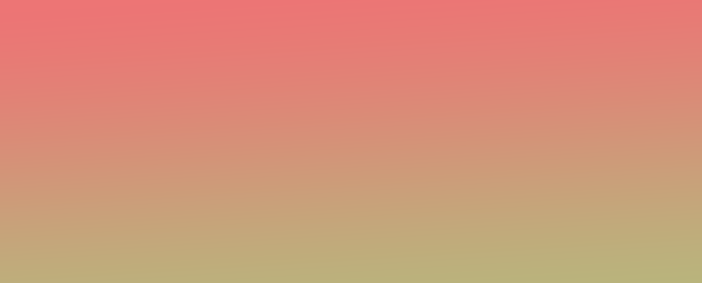
En bildserie · 20 motiv
Solia
En samling små världar, från fjäll och skog till stadsliv och stilla vatten.
Om uppgiften
Olika motiv.
En gemensam känsla.
I den här uppgiften valde jag ut och bearbetade bilder ur bildmappen. Målet var att skapa en sammanhållen serie med balanserat ljus, mjuka naturtoner och tydliga motiv, utan att förlora bildernas egna uttryck.
Bildserien
Utvalda ögonblick
20 bilder · 001–020

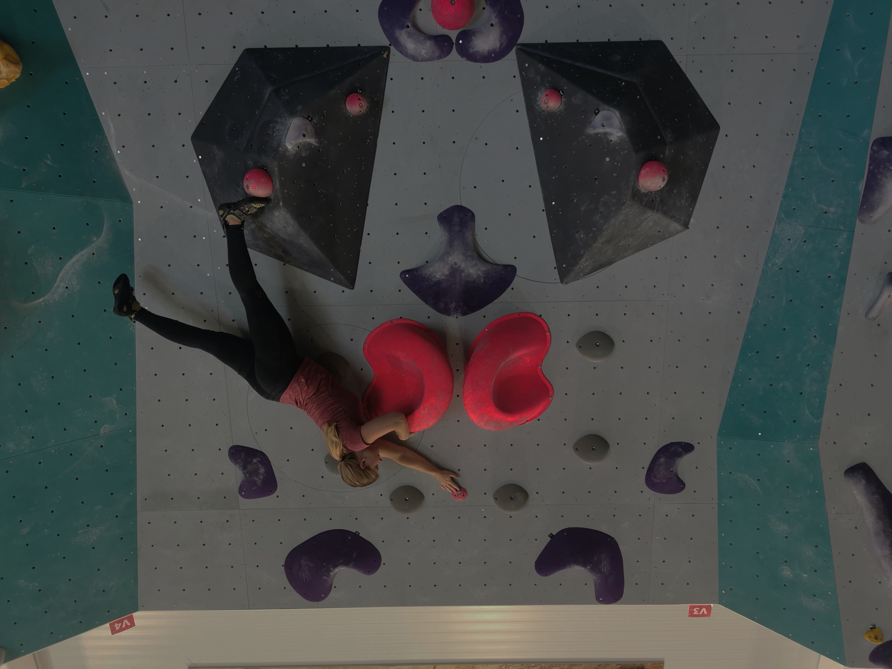
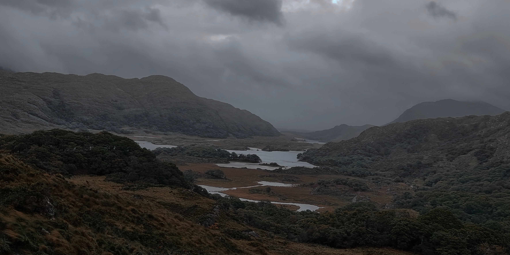


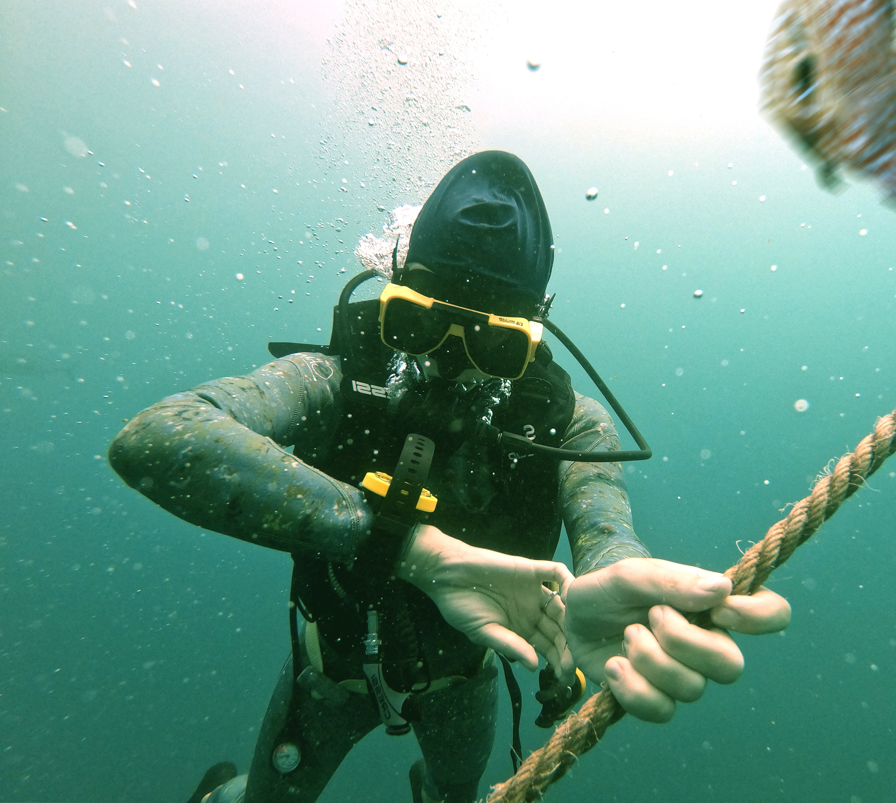
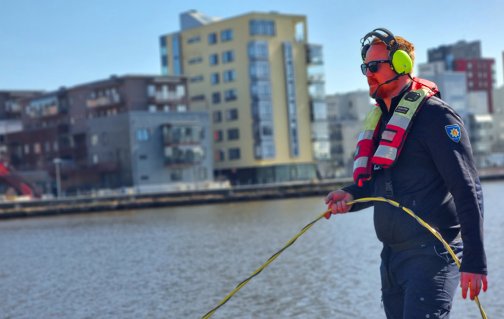

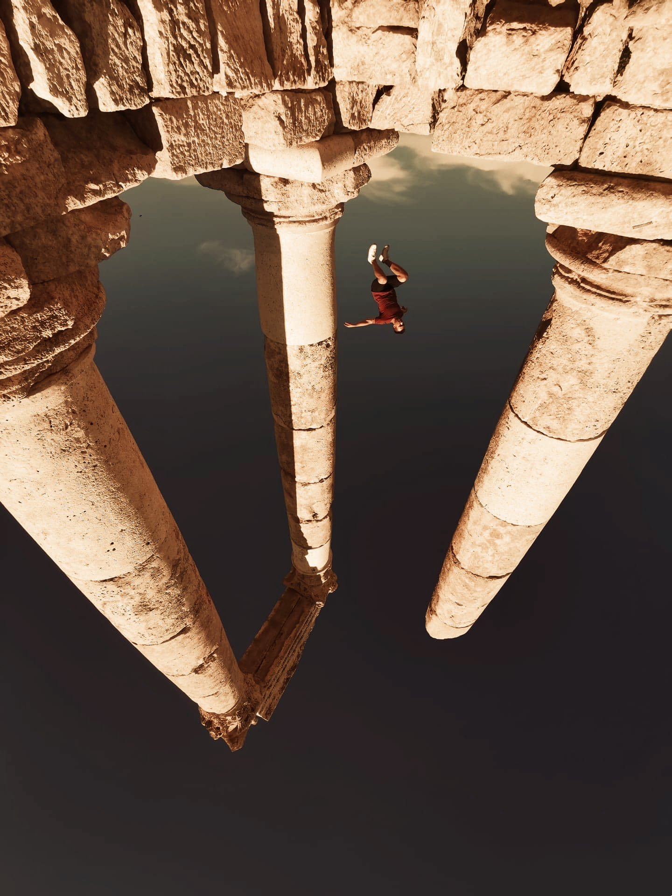
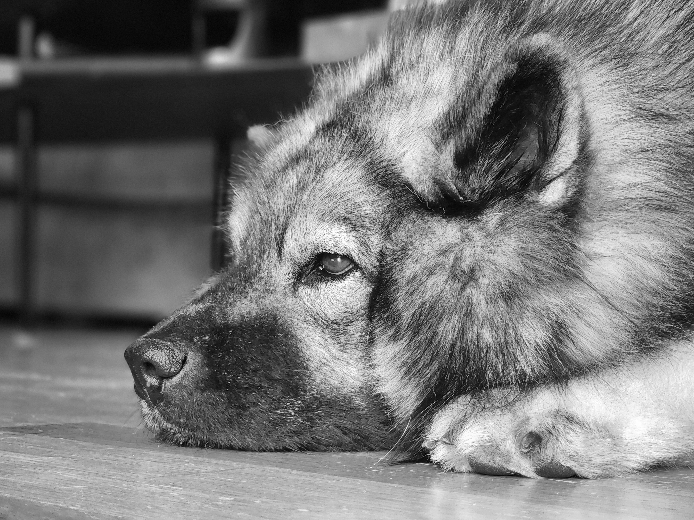
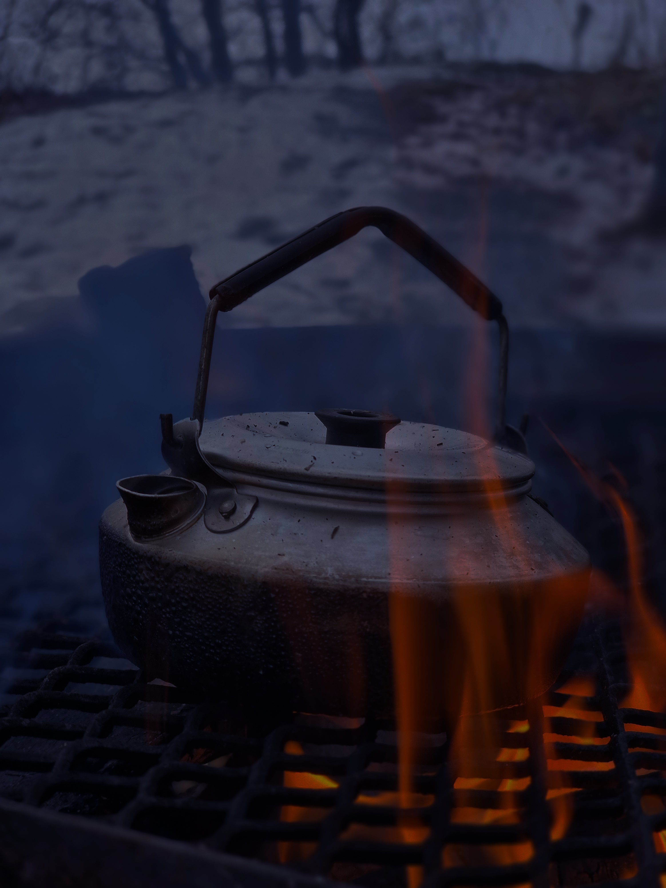


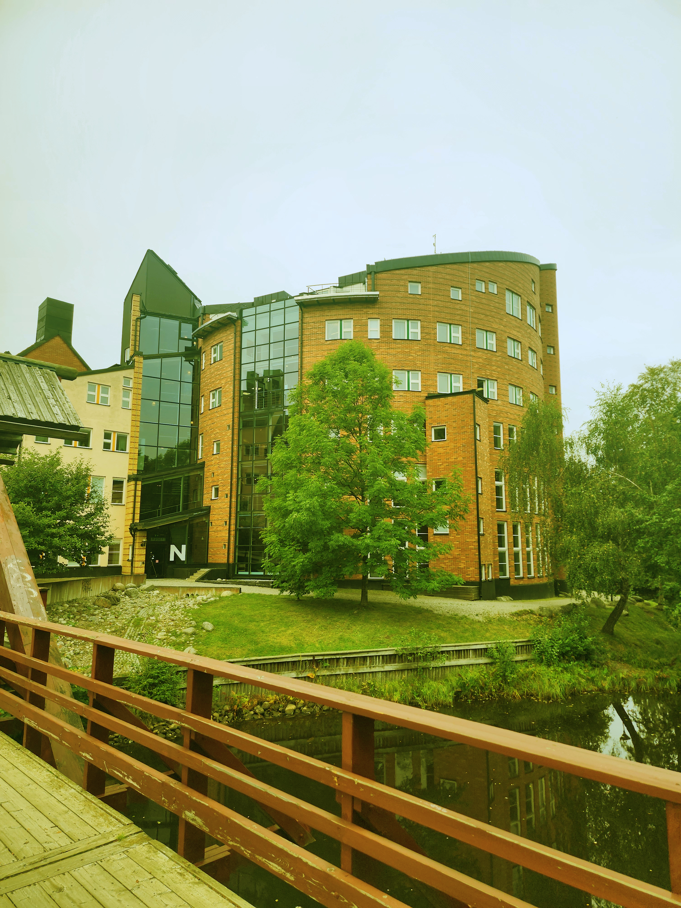
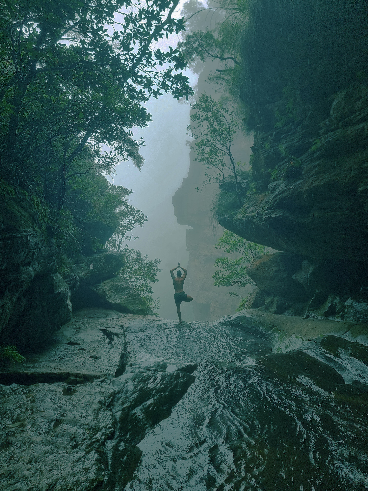

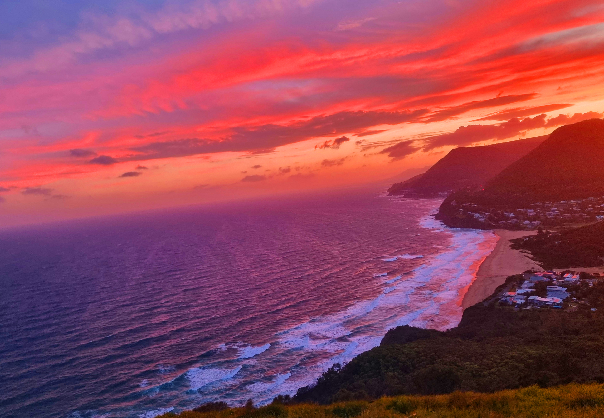
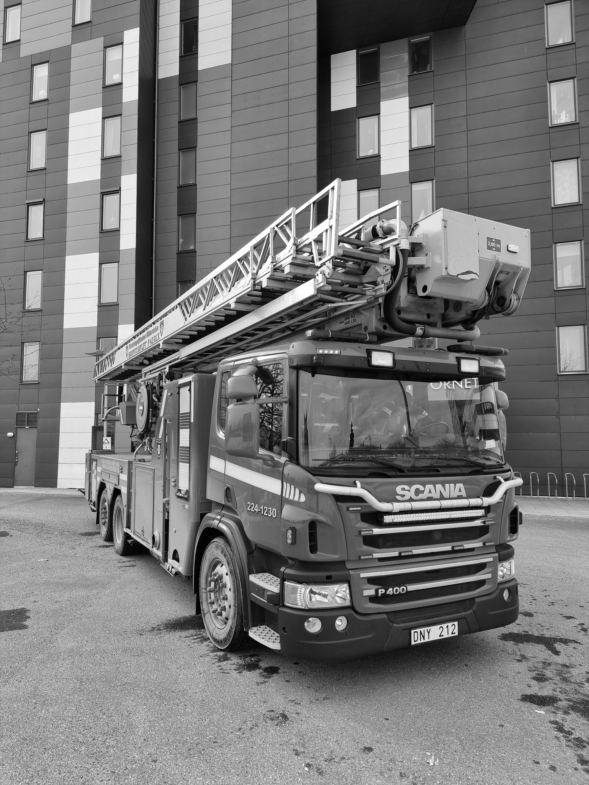